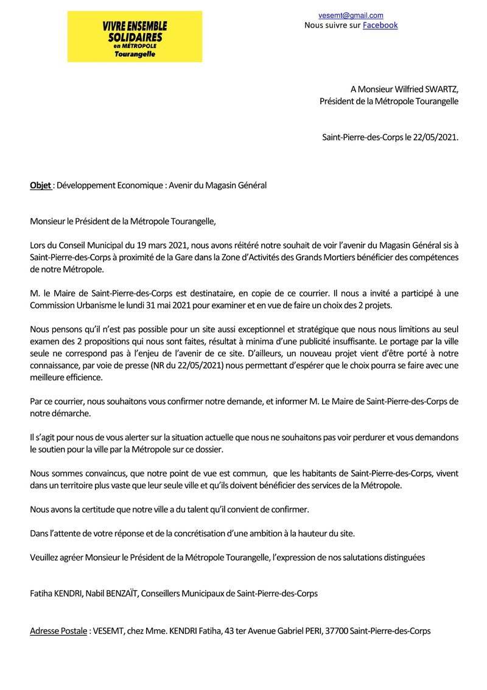

« PORTE EST MÉTROPOLITAINE : 470 HECTARES POUR « FABRIQUER » LA VILLE… LE PATRIMOINE DE SAINT-PIERRE-DES-CORPS EST-IL DANS LE PLAN ? »
Il y a des bâtiments qui vieillissent. Il y a des projets qui prennent du retard. Et puis il y a le Magasin Général : cinq ans après l’annonce de sa vente, il semble toujours avoir beaucoup plus d’avenir dans les communiqués que dans la réalité.
C’est précisément pourquoi le Comité Populaire de VESEMT revient sur ce dossier.

En mai 2021, nous vous écrivions déjà, ainsi qu’au Président de la Métropole, pour demander que l’avenir du Magasin Général ne soit pas réduit au choix entre deux projets immobiliers, mais pensé à l’échelle de Saint-Pierre-des-Corps et de la Métropole. Nous affirmions alors que ce site exceptionnel, à proximité immédiate de la gare, devait bénéficier des compétences métropolitaines et contribuer à l’avenir de notre ville.Cinq ans plus tard, le nouveau dossier de la Porte Est Métropolitaine nous donne plutôt raison.
« LE MAGA SIN GENERAL N’ÉTAIT PAS DANS LA PORTE. MAIS IL EST À SA PORTE. »
Le PPA concerne un vaste territoire et affirme désormais une ambition de transformation à l’échelle de 470 hectares. Le Magasin Général, lui, n’est pas situé dans le périmètre strict de la Porte Est. Et alors ?
Le document métropolitain lui-même montre que les choses ne peuvent pas être enfermées dans des cases cadastrales.
L’avenant n°1 du PPA consacre une action spécifique au « Grand Magasin Général », dans le chapitre consacré à l’« Espace actif des Yvaudières et des Grands-Mortiers ». Son titre est sans ambiguïté : « Le Grand Magasin Général : une polarité symbole de la régénération économique et technologique des parcs d’activités des Grands-Mortiers et des Yvaudières. »
Le document annonce un campus industriel Medtech dans ce bâtiment d’environ 30 000 m², susceptible d’accueillir une quarantaine de start-up et des entreprises innovantes internationales, avec près de 1 000 emplois annoncés. Il prévoit également une ouverture au public avec brasserie, hall d’exposition, auditorium et jardin paysager.
Le Magasin Général n’est donc plus seulement un vieux bâtiment corpopétrussien. C’est, selon la Métropole elle-même, une pièce de la régénération économique de ce secteur.
Et c’est précisément là que la proposition de VESEMT devient cohérente avec cette nouvelle étape.
LA MÉTROPOLE VEUT « FABRIQUER L’IDENTITÉ URBAINE ». COMMENÇONS DONC PAR ARRÊTER DE FABRIQUER DES MORCEAUX DE VILLE.
Le PPA reconnaît lui-même que le vaste territoire concerné est constitué d’une « mosaïque d’entités et d’objets géographiques sans véritable cohérence ou fil conducteur » et fixe comme objectif de « fabriquer l’identité urbaine du site ».
Voilà qui devrait nous intéresser à Saint-Pierre-des-Corps.
Car notre ville ne peut pas être pensée comme une succession de dossiers indépendants : la gare ici, le Centre Ville, la Rabaterie là, les Yvaudières ailleurs, les Grands-Mortiers encore ailleurs et le Magasin Général dans la colonne « affaire à suivre ».
Une ville n’est pas un puzzle dont on laisse les habitants avec les pièces qui dépassent.
Le PPA affirme lui-même vouloir consolider une vision du développement du secteur à l’horizon 2040.
Alors faisons preuve de cohérence : le Magasin Général doit être intégré à cette vision globale de Saint-Pierre-des-Corps, même s’il relève d’un autre périmètre opérationnel.
Pas pour faire plaisir au Comité Populaire de VESEMT.
Parce que c’est précisément ce que commande la logique métropolitaine affichée par le PPA.
« PRÈS DE 1 000 EMPLOIS : PROMESSE D’AVENIR OU FUTUR ANTÉRIEUR ? »
C’est ici que surgit le petit détail que les brochures aiment moins.
Dans l’avenant au PPA, le maître d’ouvrage du projet du Magasin Général est indiqué comme étant Doliam. Les partenaires associés comprennent Saint-Pierre-des-Corps et Tours Métropole Val de Loire, mais :
-
Le calendrier est indiqué : « Indéterminé ».
- Le coût préliminaire : « Indéterminé ».
- Les cofinancements : « Indéterminé ».
Voilà qui appelle quelques questions.
En 2021, VINCI Immobilier annonçait la réhabilitation du Magasin Général pour Doliam, plus de 1 000 emplois et une livraison au troisième trimestre 2024.
En 2023, VINCI annonçait encore une promesse de VEFA et une livraison au troisième trimestre 2026.
Nous sommes en 2026.
Le projet existe dans les documents. Mais son calendrier est officiellement indéterminé.
Alors, la vente sera-t-elle effectivement réalisée ? Le projet sera-t-il effectivement engagé ? À quelle échéance ? Dans quelles conditions ?
Nous ne prétendons pas connaître la réponse. Nous constatons simplement qu’elle n’est toujours pas démontrée par les documents publics que nous avons sous les yeux.
Et c’est justement pour cela qu’il faut maintenant sortir du tête-à-tête immobilier et revenir à l’intérêt collectif.
« SI LE MAGASIN GENERAL EST UNE POLARITÉ MÉTROPOLITAINE, LA MÉTROPOLE PEUT DIFFICILEMENT FAIRE COMME SI ELLE N’ÉTAIT PAS CONCERNÉE. »
Le Comité Populaire de VESEMT ne demande pas à la Métropole de décider à la place de la Ville. Nous lui demandons d’assumer sa responsabilité.
Le PPA prévoit lui-même que Tours Métropole doit engager une stratégie prospective et programmatique sur les secteurs économiques concernés, en conciliant les ambitions du PPA avec les projets publics et privés existants.
Le Magasin Général est précisément l’un de ces projets.
Mieux : il est désormais explicitement identifié par le PPA comme un élément de la régénération des Grands-Mortiers et des Yvaudières.
Alors pourquoi continuer à le traiter comme un dossier isolé ?
Pourquoi ne pas travailler son avenir avec la gare, les mobilités, les Yvaudières, les Grands-Mortiers, le patrimoine ferroviaire, les activités économiques et les habitants ?
Pourquoi ne pas répondre enfin au courrier de VESEMT de 2021 ?
LE SILENCE N’EST PAS UNE POLITIQUE PUBLIQUE
- Nous le redisons donc publiquement : une ville se pense dans son ensemble.
- Et une Métropole solidaire ne peut pas prendre acte des morceaux de ville lorsqu’ils servent son projet, puis expliquer que les autres morceaux ne relèvent pas de son problème.
Le Magasin Général est à Saint-Pierre-des-Corps.
- Il est à l’entrée de cette nouvelle géographie métropolitaine.
- Il est identifié dans le PPA.
- Il est présenté comme une polarité économique majeure.
- Il est censé participer à la régénération des Yvaudières et des Grands-Mortiers.
Et pourtant, son calendrier reste indéterminé.
Alors oui, nous maintenons cette proposition : intégrer pleinement le Magasin Général à la réflexion métropolitaine sur l’avenir de Saint-Pierre-des-Corps.
Non pas pour ressusciter une nostalgie ferroviaire.
Mais pour construire une ville cohérente.
Et surtout pour éviter qu’au moment où la Métropole nous promet de « fabriquer l’identité urbaine » de ce territoire, elle ne fabrique encore une fois qu’une collection de projets.
Le Magasin Général a peut-être trouvé sa place dans le projet métropolitain. Il reste maintenant à savoir si Saint-Pierre-des-Corps y trouvera la sienne.
Et, accessoirement, si la vente annoncée depuis 2021 aura réellement lieu.
Parce qu’un projet qui a un titre, un logo, 1 000 emplois et un calendrier « indéterminé », ça s’appelle encore une promesse. Pas encore un avenir.
Saint-Pierre-des-Corps le 20 août 2026
Le Comité populaire et néanmoins bienveillant de Vivre (surtout) Ensemble et (si possible) Solidaires en Métropole Tourangelle (VESEMT) ;
Ressources
Avenant n°1 au Projet Partenarial d’Aménagement « Porte Est Métropolitaine » – 7 juillet 2025 Syndicat des Mobilités de Touraine – document du PPA
Le Mag n°87 – Tours Métropole Val de Loire – « Le futur visage de la Porte Est Métropolitaine » Tours Métropole Val de Loire – Le Mag
VINCI Immobilier – Réhabilitation du Magasin Général pour le groupe Doliam – 9 septembre 2021 VINCI Immobilier – Magasin Général / Doliam
VINCI Immobilier – Promesse de VEFA du Magasin Général – 7 septembre 2023 VINCI Immobilier – Promesse VEFA Magasin Général
Conseil municipal de Saint-Pierre-des-Corps – 4 juin 2024 – débats sur le Magasin Général et sa vente Ville de Saint-Pierre-des-Corps – procès-verbal du Conseil municipal
VESEMT – Courrier au Président de Tours Métropole sur l’avenir du Magasin Général – 22 mai 2021 Le courrier original joint au dossier rappelle notamment que VESEMT demandait que l’avenir du site soit pensé à l’échelle métropolitaine et que la ville bénéficie pleinement des compétences de la Métropole.
VESEMT – « Rentrée 2026 à Saint-Pierre-des-Corps : Béton, Caméras & Démocratie de Façade ! » – 18 août 2026 VESEMT – article de référence
PPA – « Mettre le projet en récit pour servir la concertation » Le document métropolitain fixe notamment l’objectif de « fabriquer l’identité urbaine » d’un territoire décrit comme une mosaïque d’entités sans véritable cohérence ou fil conducteur.
PPA – « Le Grand Magasin Général : une polarité symbole… » Le chapitre 3.3.1 rattache explicitement le MG à la régénération économique et technologique des Grands-Mortiers et des Yvaudières et indique : maître d’ouvrage Doliam, calendrier indéterminé, coût préliminaire indéterminé.
TAGS #MagasinGénéral #SaintPierreDesCorps #PorteEstMétropolitaine #ToursMétropole #VESEMT #GrandsMortiers #Yvaudières #Urbanisme #DémocratieLocale #ProjetMétropolitain #DéveloppementTerritorial #AvenirSPDC
Commentaires